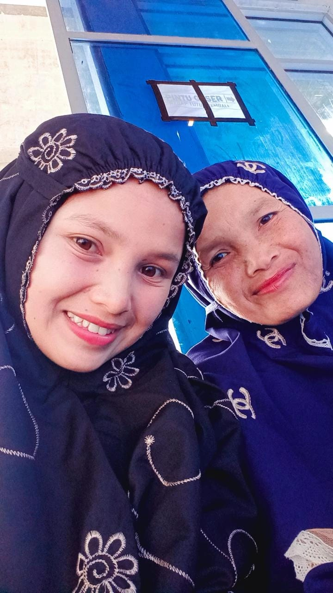
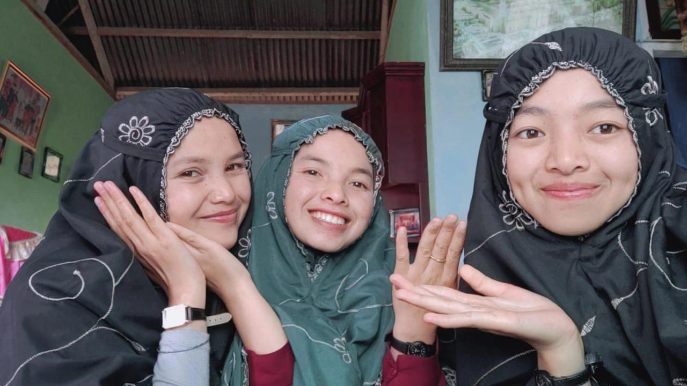
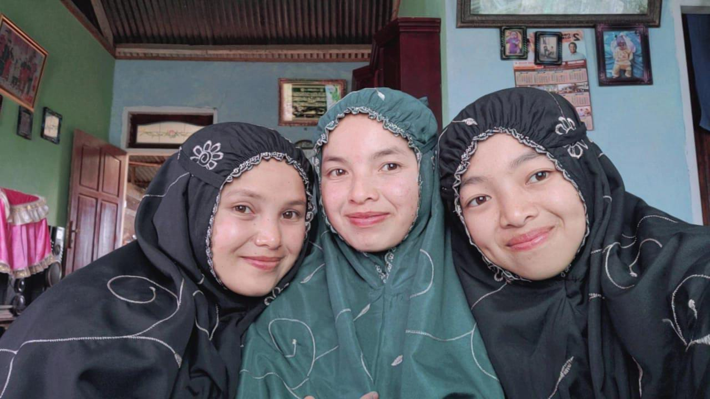
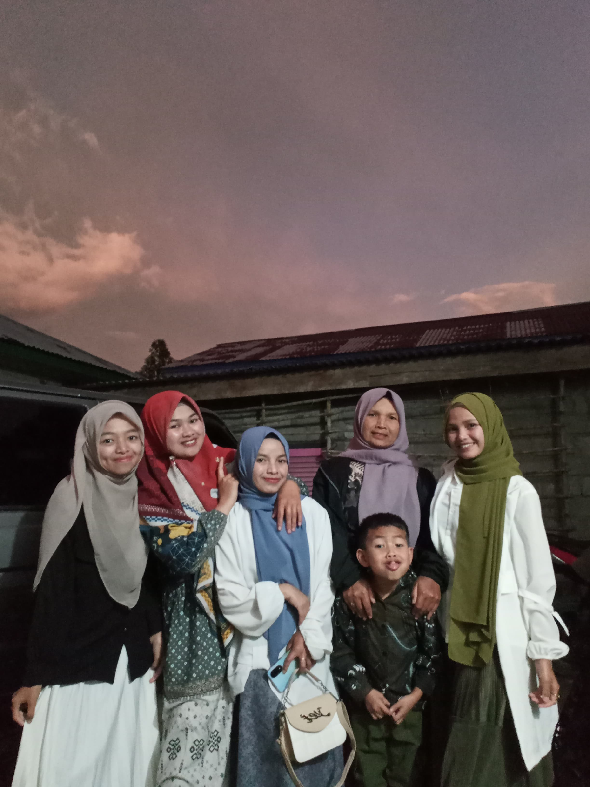
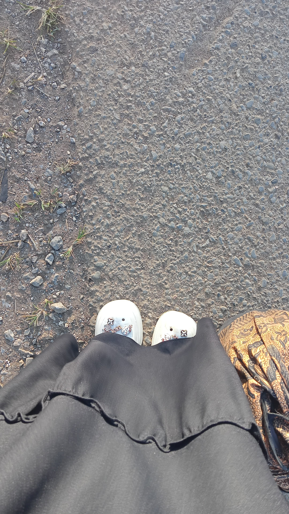
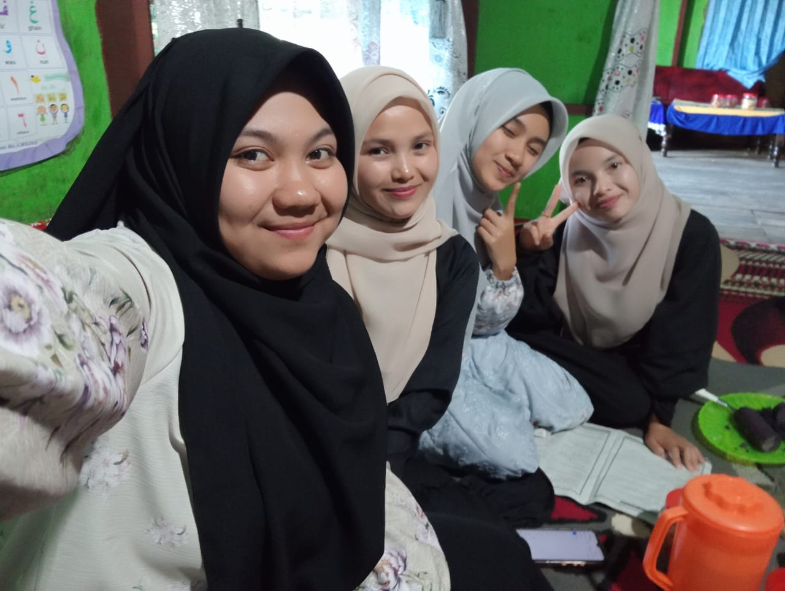
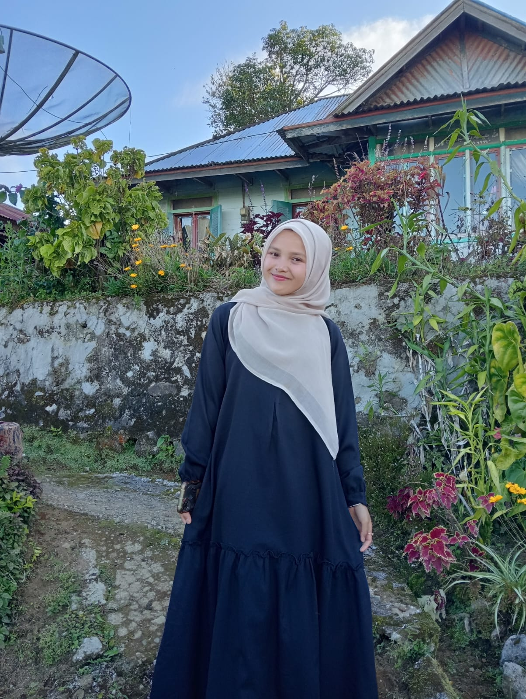
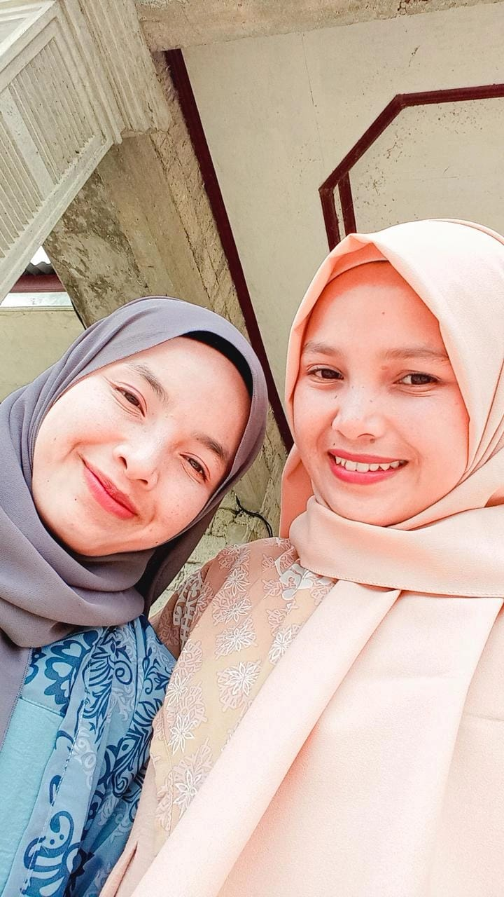
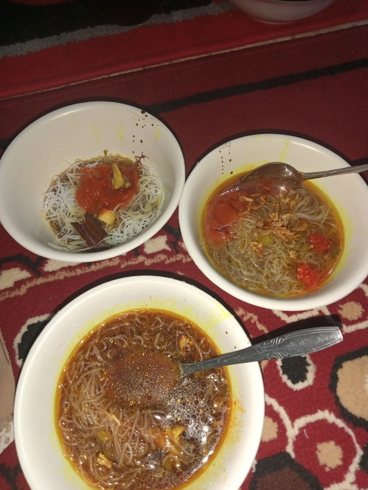

üå∑üå∑ Selamat Datang di Halaman Lebaran Saya üå∑üå∑
✍️
Assalamu'alaikum, selamat datang di halaman lebaran saya Mely Wulandari, senang berbagi momen spesial lebaran saya bersama keluarga dan kerabat tercinta. Halaman ini berisi kumpulan momen indah selama perayaan Idul Fitri 1446 H yang ingin saya bagikan. Semoga lebaran kita diberkahi Allah SWT dengan kebahagiaan dan kesehatan bersama orang tercinta.
Lebaran Hari Pertama
Takbir bergema, Shalat Ied di pagi hari menjadi pembuka perayaan Idul Fitri 1446 H. Berkumpul dengan keluarga besar, saling memaafkan, dan berbagi kebahagiaan menjadi momen yang tak terlupakan.
Dokumentasi keluargaku, sebelum ke mesjid
Suasana di mesjid



Tradisi kaum laki-laki mando'a ke rumah masyarakat yang berada disekitar.
Lebaran Hari Kedua
Lebaran hari kedua, kami pergi berkunjung kerumah mertuanya kakak pertama ku, yang tidak terlalu jauh dari rumah, beda kecamatan.Kami berangkat pukul 14.00 WIB, perjalanan kami di hadapi dengan mobil kami yang tiba-tiba mati, dan juga jalan yang lumayan macet, sehingga matinya mobil kami menamnbah kemacetan. Dan Alhamdulillah ada orang baik yang menawarkan dirinya untuk mendorong mobil kami kepingkir jalan, agar tidak mengganggu kemacetan. Tak lama kemudian datang lah seorang montil yang barusan dihubungi oleh abang ipar, setelah diperbaiki mobil kami pun hidup, lanjut kami jalan, dan kami sampe di rumah mertua kakak diwaktu magrib. .
Dokumentasi dulu üòÑ
Ceritanya kami baru sampai di rumah mertuanya kakak, aku ngajak fotbar terlebih dahulu sebelum masuk ke dalam rumah, karena langit juga sudah mulai gelapüòÑüëâ

Suasana Ramah Tamah
Lebaran Hari Ketiga
Di hari ketiga, kami pergi menjalang. Yang merupakan adat istiadat dan tradisi di Minangkabau yang setiap lebarannya pergi manjalang kerumah kerabat family dan induak bako. Untuk hari pertama menjalang kami pergi ke 9 rumah yang ada di jorong kami dengan membawa rantang yang berisikan beras, dan kue-kue. Saya pergi bersama kakak perempuan yang nomor dua.



kocak khaira, belajar jadi konten kreatorüòÑ
Lebaran Hari Keempat
Lebaran hari ke empat masih dengan suasana pergi manjalang, dan kami pergi menjalang ke kampung orang tua papa, kegiatan manjalang kali ini lumayan seru, karena kampung papa ni dekat danau atas gais,
Maa Syaa Allah bangettt pemandangannya. ü´∂ü§ó
Dokumenasi adalah hal yang wajibüòÑ

Datang yang berbarengan dimalam itu, kami yang baru pulang dari menjalang dan kakak perempuan beserta keluarga suami nya juga baru sampai di rumah untuk pergi beraya, suasana khidmat antara dua keluarga, obrolan datang dengan sendirinya mulai dari pembahasan kebun, kemacetan, lebaran, dan lainnya.
Vidio perjalanan menuju tempat bako, perjalanan double dengan menikmati keindahan alam.
Lebaran Hari Kelima
Dihari kelima kami pergi kerumah sepupu pergi beraya, disini kami disuguhi dengan Soto Ayam penggugah selera, banyak tawa dari pertemuan kami saat itu, menyaksikan kerandoman kami kalau sudah berkumpul, tingkah hanin sepupu kecil kami dan membuat tawa kami semakin menjadi-jadi. ‚úçÔ∏èüòÑ

Lebaran Hari Keenam
Kami bantu ibu Maurek bawang gais, ceritanya kami mulai jam 11.00 WIB sampai jam 21.30 WIB kami pulang nya sudah malam gais, bawang nya itu mau dibawa ibu kepasar pagi minggu gais, jadi kalo kami ga bantu ibu sape selesai ibu bakal kerjainnya sampe larut malam, yaudah gapapa kami bantuin ibu aja sampe kelar ü§óü´∂.


.jpg)